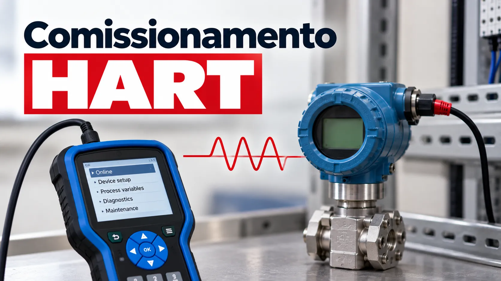

Comissionamento HART: checklist de campo
Conteúdo técnico: ALOGY Engenharia · Atualizado em: 11/09/2026

Uma malha HART combina a variável primária no sinal analógico 4-20 mA com comunicação digital bidirecional no mesmo par de fios. Por isso, comissionar não é apenas conseguir comunicar: é confirmar que identificação, range, corrente, variável de processo e diagnóstico contam a mesma história.
O que o HART acrescenta à malha 4-20 mA?
O sinal analógico continua representando a variável primária. Sobre ele, a comunicação digital transporta TAG, faixa configurada, unidade, damping, status e outras informações. Essa separação é útil no diagnóstico: um problema pode estar no sensor, na conversão para corrente, na fiação, no cartão ou no scaling do sistema.
Checklist antes de gravar parâmetros
- Identificação: compare TAG, serviço e endereço/polling com a documentação.
- Range: confira LRV, URV, unidade e função de transferência.
- Damping: confirme o valor previsto para a aplicação.
- Diagnóstico: registre alarmes, status e proteção contra escrita antes da intervenção.
- Malha: confira polaridade, tensão disponível, continuidade, blindagem e compatibilidade HART dos elementos em série.
Teste funcional em quatro comparações
- Leia a variável primária e a corrente informadas digitalmente pelo instrumento.
- Meça a corrente real conforme o método previsto para a malha.
- Compare a corrente com o valor recebido pelo cartão PLC/DCS.
- Compare a unidade de engenharia no sistema com LRV, URV e função configurados.
Essa sequência localiza a discrepância. A variável HART pode estar correta e a corrente errada; a corrente pode estar correta e a escala no sistema incorreta; ou ambos podem divergir do padrão aplicado.
Exemplo: 0-10 bar em 12 mA
Em uma escala linear de 0 a 10 bar, 12 mA correspondem a 50% do span e, portanto, a 5 bar. Se o transmissor informa 5,2 bar via HART e a corrente permanece em 12 mA, investigue configuração, simulação, sensor trim e output trim. Se HART e corrente correspondem a 5 bar, mas o DCS mostra 5,2 bar, avance para cartão, raw counts e engineering scaling.
Sensor trim e output trim não são sinônimos: um atua na relação de medição; o outro na saída analógica. Aplique apenas o ajuste previsto pelo procedimento e fabricante.
Critério de encerramento
- TAG, LRV/URV, unidade e damping conferidos.
- Comunicação estável no ponto previsto.
- Corrente indicada, corrente medida, raw do cartão e valor de engenharia coerentes.
- Alarmes e diagnósticos avaliados, não apenas apagados.
- Configuração final registrada para comparação futura.
Ferramentas relacionadas
Referência técnica
A FieldComm Group descreve os canais analógico 4-20 mA e digital HART e os dados adicionais disponíveis para configuração e diagnóstico.
Aviso técnico
Este material é informativo. Não substitui procedimento de commissioning, projeto da malha, análise de segurança, manual do instrumento ou controle formal de alterações. Mudanças permanentes de configuração devem seguir a governança da instalação.